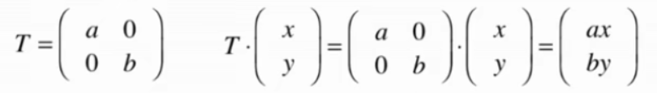
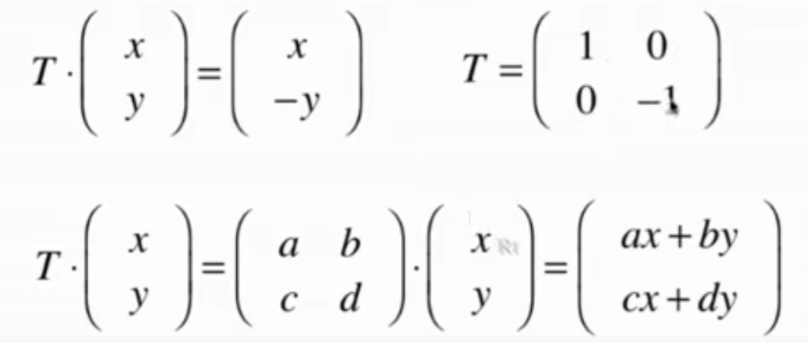
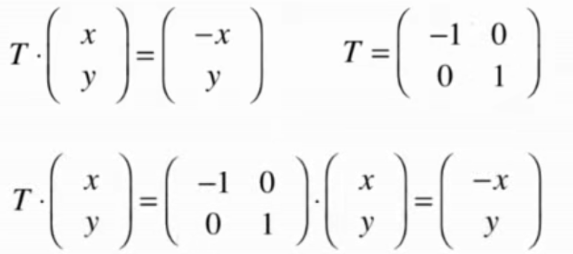
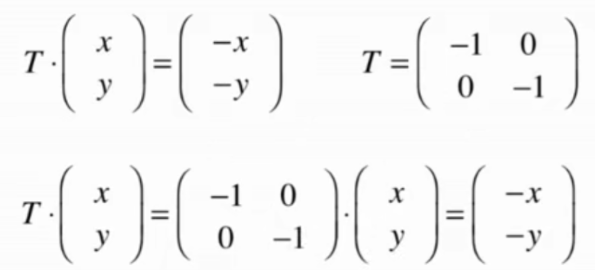
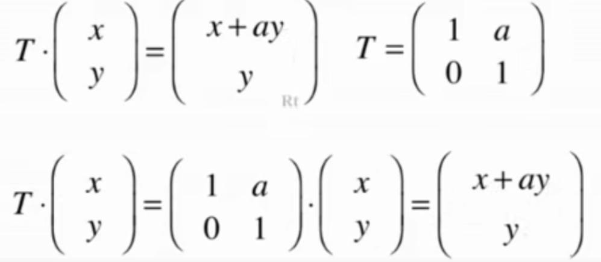
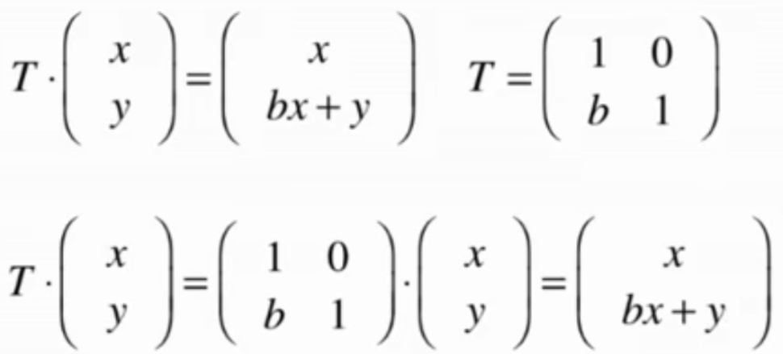
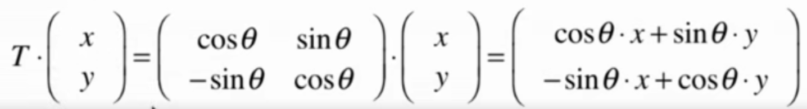
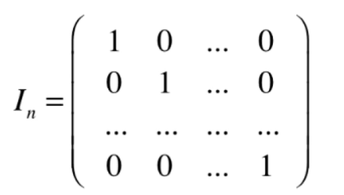
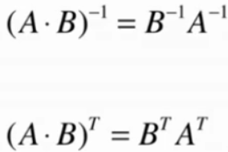

矩阵转换 链接到标题
矩阵转换 链接到标题
矩阵可以看作是一个向量的函数，则矩阵可以表示变换。
假设有以下向量(x,y),如何让该向量每个点横坐标扩大 a 倍，纵坐标扩大 b 倍，根据矩阵的点乘性质，则可以推出

假设矩阵还可以表示一个图形，那么如何将图形关于 x 轴翻转，也可以通过点乘另一个矩阵进行转换。例如

由此也可以推广出更多的转换。
关于 y 轴的翻转

关于原点的翻转

沿 x 方向错切

沿 y 方向错切

关于原点进行旋转 sitar 角度

单位矩阵 链接到标题
如果一个矩阵点乘另一个矩阵，矩阵的每一个元素没有发生任何变化，则称这种矩阵为单位矩阵。

性质 链接到标题
- 单位矩阵的主对角线全为 1.
- 单位矩阵一定是方阵.
- 假设单位矩阵为 I，另一个矩阵为 A，则 I · A = A，A · I = A
矩阵的逆 链接到标题
定义 链接到标题
在数字系统中，除了 0 之外，X * 1/X = 1.
那么在矩阵中，设矩阵 A，B。如果 A · B = B · A = I，则称 B 为 A 的逆矩阵，记作 B = 1/A.
性质与推广 链接到标题
- 在矩阵系统中，有一些矩阵并没有逆矩阵。如果矩阵 A 存在逆矩阵，则称 A 为可逆矩阵，或者叫非奇异矩阵(non-singular)，相反如果矩阵不可逆，则称为不可逆矩阵，或者奇异矩阵(singular)。
- 如果存在矩阵 A，B，C，B·A = I，则称 B 是 A 的左逆矩阵。如果 A·C = I，则称 C 是 A 的右逆矩阵。
- 如果一个矩阵 A 既存在左逆矩阵 B，又存在右逆矩阵 C，则 B=C。
- 对于矩阵 A,如果存在逆矩阵 B，则 B 唯一。
- 可逆矩阵一定为方阵，非方阵一定不可逆。
- A 的 0 次方 = I，A 的-1 次方为 A 的逆。
- 矩阵的逆的转置等于矩阵的转置的逆。
